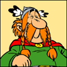
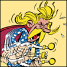
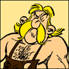
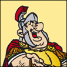
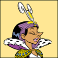
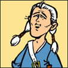
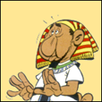
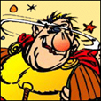
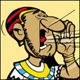

Le film
Astérix, anciennement Astérix le Gaulois, est une série de bande dessinée franco-belge créée le 29 octobre 1959 par le scénariste français René Goscinny et le dessinateur français Albert Uderzo dans le no 1 du journal français Pilote. Après la mort de René Goscinny en 1977, Albert Uderzo poursuit seul la série, puis passe la main en 2013 à Jean-Yves Ferri et Didier Conrad.
أستيريكس ، المعروفة سابقًا باسم أستيريكس لو جولوا ، هي سلسلة كتب هزلية فرنسية بلجيكية تم إنشاؤها في 29 أكتوبر 1959 بواسطة كاتب السيناريو الفرنسي رينيه جوسيني ورسام الكاريكاتير الفرنسي ألبرت أوديرزو في العدد الأول من صحيفة بيلوت الفرنسية. بعد وفاة رينيه جوسيني في عام 1977 ، واصل ألبرت أوديرزو المسلسل بمفرده ، ثم سلمه في عام 2013 إلى جان إيف فيري وديدييه كونراد.
La série met en scène en -50 (peu après la conquête romaine) un petit village gaulois d'Armorique qui poursuit seul la lutte contre l'envahisseur grâce à une potion magique préparée par le druide, cette boisson donnant une force surhumaine à quiconque en boit. Les personnages principaux sont le guerrier Astérix et le livreur de menhirs Obélix, chargés par le village de déjouer les plans des Romains ou d'aller soutenir quiconque sollicite de l'aide contre la République romaine.تعرض السلسلة في -50 (بعد فترة وجيزة من الفتح الروماني) قرية غالية صغيرة من أرموريك والتي تواصل وحدها القتال ضد الغزاة بفضل جرعة سحرية أعدها الكاهن ، هذا المشروب يعطي قوة خارقة لأي شخص يشرب. الشخصيات الرئيسية هي المحارب أستريكس ومنقذ منيرس أوبيليكس ، الذي كلفته القرية لإحباط خطط الرومان أو الذهاب ودعم أي شخص يطلب المساعدة ضد الجمهورية الرومانية.
Scénario : Goscinny – Dessins : UderzoEditeur : Hachette Livre
Première Publication : Pilote n°215 (05/12/1963)
Première édition en album : 1965
Adaptation en film animé : Astérix et Cléopâtre : 1968
Adaptation en film live : Astérix et Obélix : Mission Cléopâtre en 2002
Excédée par ses sarcasmes, Cléopâtre fait à César le pari d’édifier dans la ville d’Alexandrie un palais somptueux en son honneur, en trois mois, jour pour jour !
Pour Numérobis, l’architecte à qui la reine confie le projet, c’est mission impossible. D’autant qu’Amonbofis, son rival jaloux, fera tout pour mettre son projet en péril.
Il ne lui reste qu’un espoir : Panoramix, le druide gaulois aux pouvoirs magiques…
أستريكس و كليوباترا هو فيلم ملحمي صدر في سنة 1968. الفيلم من إخراج رينيه جوسيني.
سيناريو: جوسيني - رسومات: اديرزو
الناشر: Hachette Livre
الإصدار الأول: طيار رقم 215 (12/05/1963)
أول إصدار للألبوم: 1965
فيلم رسوم متحركة مقتبس: أستريكس وكليوباترا: 1968
تأليف الفيلم الحي: أستريكس وأوبيليكس: مهمة كليوباترا عام 2002
بسبب غضبها من سخرية القيصر، تراهن كليوباترا القيصر على بناء قصر فخم في مدينة الإسكندرية على شرفها ، في ثلاثة أشهر حتى اليوم!
بالنسبة إلى Numerobis ، المهندس المعماري الذي أوكلت إليه الملكة المشروع ، فإن المهمة مستحيلة. خاصة وأن Amonbofis ، منافسه الغيور ، سيفعل أي شيء يعرض مشروعه للخطر.
لم يبق لديه سوى أمل واحد: Panoramix ، الكاهن الغالي بقوى سحرية ...
Les personnages du film
Abraracourcix
Amonbofis
Assurancetourix
Astérix

Barbe Rouge
Cétautomatix
Chorus
Cléopâtre
Erix
Ginfis
Idéfix

Jules César

Le goûteur de Cléopâtre
Misenplis
Numérobis
Obélix
Pacotéalargus
Panoramix
Sanglier
Tournevis

Triple Patte
Tumehéris
www.gamalasker.com